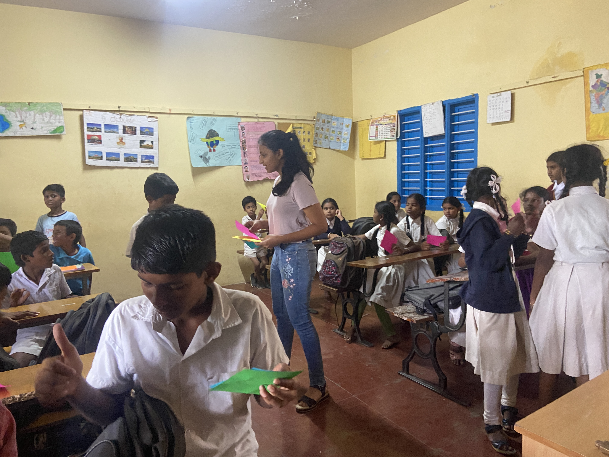
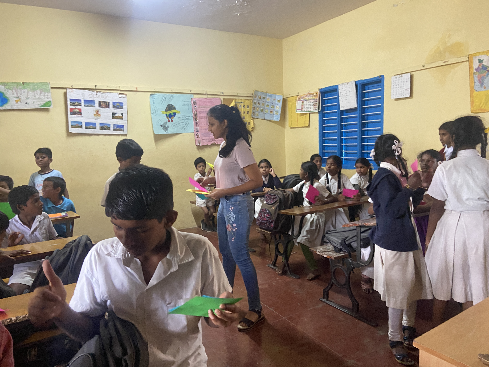

APP DEVELOPMENT FOR STARTUPS
This was my first project with a real client. I collaborated with two of my friends to make a mobile app for Healing Miracles, a small company that provides meditation and healing sessions and products. It was an amazing experience to interact with the company to understand their services and products, come up with design mockups, create graphic designs, and code to create the final app.

I made a mobile app for Creative Oven, a small business based in Delhi which makes and supplies customised cakes. It was very exciting to apply what I have leant to create an app for a client. Understanding the customer need, identifying the target audience, considering user experience- all these factors become extremely important. I found it very satisfying when the client was happy and benefited by reaching the right market.
SCHOOL HACKATHON-MENTORING AND ORGANISING
I mentored middle and high school students at Stonehill International School to bring their ideas to life through coding, training them for future hackathons. I thought a variety of languages like Python, HTML,CSS and jQuery in Web Development and Java Script in Game Development. I also plan on covering electronics in the future.

I was also part of the core team organising the Stonehill Hackathon. As the 2023 was virtual, I helped set up crucial parts such as the GitHub for the participants to submit their ideas. I also checked in with the teams throughout the hackathon to judge their products and helped select the teams making it to the next round.

.JPG)
.JPG)


.JPG)

 
